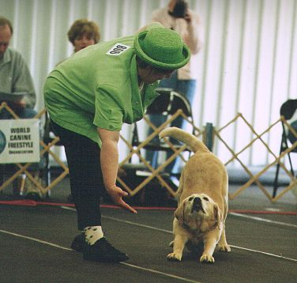
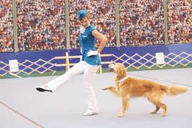
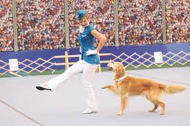

Co je a kde se vzal dogdancing?
Musical canine freestyle, také známý jako hudební freestyle, freestyle dance a canine freestyle, je moderní psí sport, který je směsí výcviku poslušnosti, triků a tance, který umožňuje kreativní interakci mezi psy a jejich majiteli.
Historie
Dogdancing začal na mnoha místech téměř současně kolem roku 1989, přičemž demonstrace talentu hudbě na patách byly ukázány v Kanadě, Anglii, Spojených státech a Nizozemsku během tří let po sobě. Hlavním jednotícím prvkem mezi skupinami byl zájem o kreativnější ukázky poslušnosti a výcviku psů, láska k hudbě a v mnoha případech inspirace koňským sportem zvaným music kur, což byla kreativnější a dynamičtější forma drezury.
První oficiální hudební freestyle skupina Musical Canine Sports International byla založena v Britské Kolumbii v Kanadě v roce 1991. Brzy následovaly další skupiny ve Spojených státech a Anglii. Každý region začal vyvíjet svůj vlastní styl, přičemž mnoho amerických skupin propagovalo trikové rutiny a kostýmy. Anglické skupiny se více zaměřovaly na práci s patami a na psa a méně na kostýmy a design. Hudební freestyle se stal běžnějším ve zvířecích talentových show a speciálních vystoupeních.
.png) 
